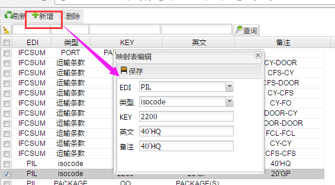
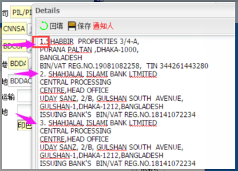
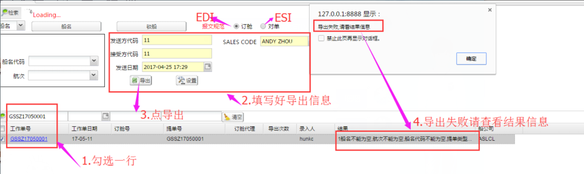
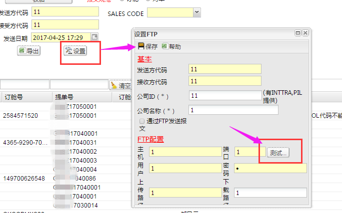
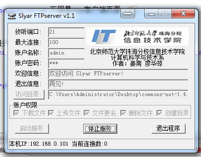

现在订舱和提单确认均可以采用系统对接方式，这样将大大节省大家的工作量，系统录入我大部分都有验证，录错的情况下不能导出，但还请大家注意下面几点：
1、EDI取的是工作单委托里面的，ESI取的是订舱里面的，订舱里面没有的取委托里面的。
2、柜子里的唛头和品名(货描)是每个柜型需录一次，因为报文要求根据柜型分组
3、箱型对应的isocode和包装对应的代码要自己录在EDI-Mapping里面，这个也是pil要求用的他们的代码，下面是录入界面，填好保存即可。

4、当柜子里面有备注(混装描述)的时候,以回车为界，每个回车就会多一行73B
5、如果欧改港的情况，情把委托和订舱中的起运港、目的港、卸货港录入不同，ESI报文就会有REC15来描述改港。
6、箱型只能填PIL文档要求的几种：20F、20GP、20HQ、20OT、20RF、40FR、40GP、40HC、40OT、40RF、40RH、45HQ。
7、edi和esi的通知人pil文档里面要求分开 我们系统是在同一个框里面输入的 目前是根据大家输入中 序号加点（eg：1. 2. 3.） 来提取的 大家录入的时候如果通知单有多个（最多三个） 请在开头加上序号和英文的点，如下图：

8、导出来后为PMD为后缀的文件，这是PIL要求的，如果想看里面内容请将后缀改成TXT再用记事本看，但是不要修改里面内容，加一个空格都不行，发送给PIL的时候改回PMD的后缀。
9、据同事要求，因为PIL要求每行是35个字符的，发货人和收货人自动分割字符串会将不足35个字符的自动补上，这样会导致每行的字符和输入字符回车位置不同的情况，所以在导出页面特意加入了不自动分割字符串的选项，选不自动分割时，发货人和收货人会按照回车来分割，但需要注意每行不能超过35个字符。
10、录入的信息中不能含有中文，因为报文都是代码，所以都是取的英文名称，这个也是有验证的
11、rec16(发货人)/17(操作公司)/18(约主)/21(收货人)/26(通知人)每行超过250字符部分放到箱型循环的第一个rec47下面 用多个*号拼接
12、柜号那里的商品编码,除了欧洲等需要申报HS CODE的需要填写以外，其他一律不填写，否则就进舱单了
13、 品名不要固定录入000000， 请按附件的"HS CODE" 录入实际的定舱品名
14、 RFA 有10位数和11位数两种格式， 如果录入不完全，请录入在73B 备注处(RFA-SZX17A12345)， 我司会以EXCEL BOOKING 的RFA 为准
15、此处合约号，如果SO 的RFA NO. 不是 DUM0000001，请按照SO 填写实际的；否则一律默认是 DUM0000001
发货人和收货人：不能超过6行，每行不能超过35个字符，多余6行的先在发货人框中填若干个'*'号，然后把多余的拼接到第一个品名的后面
通知人：只有一个通知人的情况下和发货人规则一样，多个通知人的情况下：用回车+数字+'.'来分割，且每个通知人多于6行的部分也要用'*'号拼接到第一个品名下
唛头：每个柜型填一次就行，唛头没有行数限制，但每行不能超过20个字符
品名：请写在英文品名处，品名没有行数限制，但每行不能超过30个字符，若发货人、收货人、通知人中有多于的字符要用对应若干'*'号拼接在后面
请看下图所示，按步骤操作即可

1.请先将要导出的单子搜索出来，这样可以避免列表加载节省时间
2.勾选好单号，填写发送信息(黄色底色部分)
3.点导出，若导出失败说明录入不符合规范，请查看结果信息按要求录入后重新导出即可。
如果欲通过FTP保存文件到自己的电脑，请在下图中的FTP配置中勾选通过FTP发送报文，然后点击保存
1.下图是设置FTP页面
主机、端口、用户、密码为必填项，必须与你客户端的FTP设置一样
填写好FTP配置后先点击保存，点击测试，若弹出“FTP配置正确“说明可以连接到你的FTP客户端”

2.下图是FTP客户端页面
FTP客户端可到网上自行下载，以下图为例，设置好后点击启动服务即可
